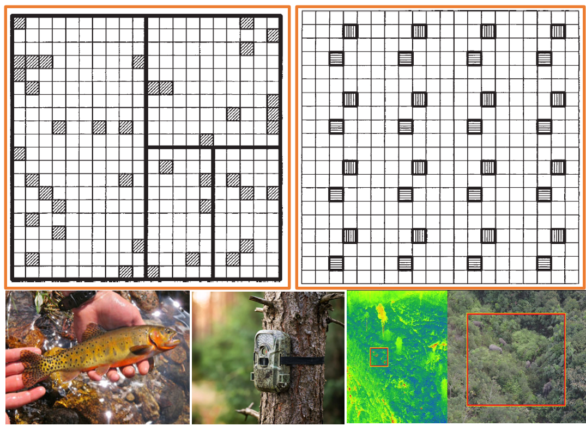

FW 552
Applied Sampling for Wildlife/Fish Studies
(Fall 2025)
FW 552
Applied Sampling for Wildlife/Fish Studies
(Fall 2025)

Syllabus
Instructor
Name: Brian D. Gerber
Position/Affiliation Research Scientist and Assistant Unit Leader at U.S. Geological Survey, Colorado Cooperative Research Unit and Associate Professor in the Department of Fish, Wildlife, and Conservation Biology at Colorado State University.
Office: 202A Wagar, Colorado Cooperative Research Unit
Email: brian.gerber@colostate.edu
Office Hours: We 1:00pm - 2:00pm or by appointment; if my door is open, feel free to ask if I have time.
Email: I am generally responsive to questions sent via email if they are short and clear what the concern/question is.
Course Information
Course Number: FW 552
Fall 2024: Mo/We 3-4:15pm
Credits: 3
Websites: bgerber123.github.io/FW552/ (lecture and lab materials) and Canvas (Quizzes, Discussion, Lab Submissions, and Grading).
Schedule: Subject to Change
Prerequisites: A basic undergraduate statistics course is required (e.g. CSU’s Stat 301 Introduction to Applied Statistical Methods. I strongly encourage having exposure to the R programming language prior to this class. For those with no prior experience with R, please let the instructor know and be prepared to work a bit harder.
Text and Readings: Primarily we will use Thompson (2012). Sampling. Third Addition. All lecture and course materials will be provided.
Computing: A computer will be necessary to complete assignments; a laptop will be necessary for some classroom assignments.
Software: We will use R through RStudio Desktop.
Course Description
This course covers the core concepts of sampling design, including survey sampling theory and techniques, which provide a foundation for designing and interpreting fish and wildlife studies.
Sampling designs and surveys are generally covered sparsely in statistics courses regularly taken in graduate school, yet, such designs are key to learning about fish, wildlife, and their habitats. A commanding understanding of the fundamental theory of sampling as well as sampling design alternatives is a super power. This power helps you think through and implement practices to mitigate potential biases and help ensure your data are appropriate for statistical inference. A cornerstone of effective wildlife and fish management is sound science and the ideas of sampling help ensure that your science is sound. This course will introduce students to sampling theory and will provide practical examples that apply to fish and wildlife studies.
Course Learning Objectives
Upon successful completion of this course students will:
Identify different types of sampling designs and understand when to apply them
Understand statistical estimators and their properties
Frame a sampling design problem and apply appropriate statistical tools to estimate parameters of interest in accordance with the selected design.
Use newly acquired sampling knowledge and analyses to solve problems in fish and wildlife conservation and management.
Be able to use fundamental code practices in the R programming language.
Be able to think about answering a research question from a
sampling perspective, in contrast to a logistics or field techniques perspective.
Assessment
| Assessment Components | Percentage of Grade |
|---|---|
| Course Engagement | 10% |
| Assignments | 25% |
| Quizzes | 25% |
| Exam | 20% |
| Presentation | 20% |
Table 1: Grade breakdown by graded components
| Letter Grade | Percentage Range |
|---|---|
| A+ | 100.00 to 96.67 |
| A | 96.67 to 93.33 |
| A- | 93.33 to 90.00 |
| B+ | 90.00 to 86.67 |
| B | 86.67 to 83.33 |
| B- | 83.33 to 80.00 |
| C+ | 80.00 to 76.67 |
| C | 76.67 to 70.00 |
| D | 70.00 to 60.00 |
| F | 60.00 to 00.00 |
Table 1: Grade scheme from CSU
Student Experiences and Pedagogical Techniques
In-class lectures: Class periods will often include a lecture that which will incorporate instructor-led questions and short discussions. Please come prepared to share your thoughts and opinions. This class is intended to be an open environment of ideas, thoughts, and questions. We should all be prepared to challenge each other, leveraging our personal experiences and knowledge.
In-class student-led discussions: Small groups (~2 students) will be assigned to co-lead discussions on assigned readings. These discussions will occur prior to any lecture for that class. This will provide students with an opportunity to communicate about the assigned readings content, raise questions for themselves and learn to elicit thoughts and questions from others.
Out-of-class assignments: Assignments will be common and help guide learning and provide feedback to the instructor.
Out-of-class reading: Come prepared to class by having read and thought about the assigned readings; check the website for discussion points. Come with questions! Come preprared to answer questions from other students and the instructor.
Quizzes: Quizzes will be administered on Canvas and will be used to gauge student comprehension of assigned readings and provide accountability for out-of-class preparation.
Tests: We will have one mid-term exam.
Student Presentations: Students will give a short and punchy oral presentation following the Ignite Talk format (5 min, 20 slides, slides advance automatically every 15 seconds). The topic is up to the student but focus on the ideas of sampling; topics could be about 1) improving a current study, 2) designing a future study, or 3) evaluating sampling options in terms of bias/precision/cost/etc. Some considerations when making the presentation …
- Are the sampling design and methods well-articulated?
- Is the sampling frame and sampling unit well defined?
- Has the sample size been determined and effort allocation been addressed?
- Have underlying assumptions been noted?
- Has the appropriate biological and ecological considerations been incorporated into the design?
Additional Course Policies
Communication: For important announcement I will use the Announcements page in Canvas to communicate changes to the course and other information as needed. Smaller changes will be announced in class.
Schedule:. The schedule is subject to change. Please consult it weekly.
Syllabus:. The core of this syllabus is unlikely to change, but modifications are possible. Major changes will be discussed together in class.
Submitting Assignments: Please use clear file naming when submitting homework assignments. Always include your last name and some identifier as to the assignment.
Academic Integrity and CSU Honor Pledge: This course will adhere to the CSU Academic Integrity/Misconduct policy as found in the General Catalog and the Student Conduct Code. Academic integrity lies at the core of our common goal: to create an intellectually honest and rigorous community. Because academic integrity, and the personal and social integrity of which academic integrity is an integral part, is so central to our mission as students, teachers, scholars, and citizens, I will ask that you affirm the CSU Honor Pledge as part of completing your work in this course. Further information about Academic Integrity is available at CSU’s Academic Integrity - Student Resources.
Conduct: I am committed to your learning. I expect that all of us to demonstrate respect, civility, and the ability to listen to each other within our classroom and virtual spaces.
Accommodation Needs: If you are a student who will need accommodations in this class, please contact me to discuss your individual needs. Any accommodation must be discussed in a timely manner. A verifying memo from The Student Disability Center may be required before any accommodation is provided.